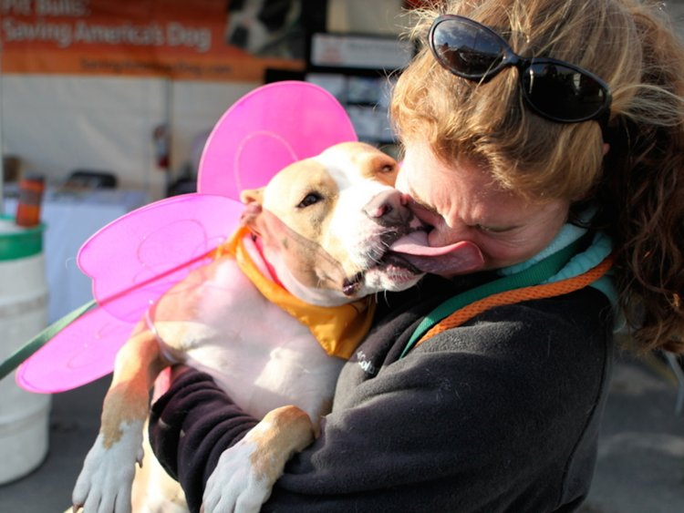
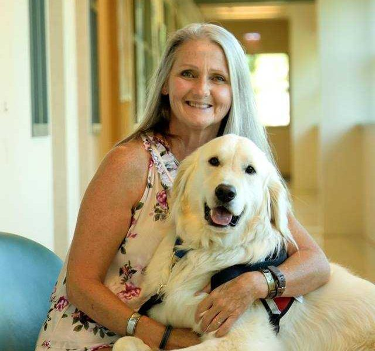

Meet Our Dogs!

Ruby is five years old and was adopted by Helen in August 2018 after meeting on one of our walks. Ruby is a big softy and a hugely affectionate dog. She is a sweet and gentle girl.
Max is seven years old and was adopted by Steven in July 2016. Max is a bright, intelligent boy who loves treats and walks in the park. He loves a cuddle or a belly rub and is very happy in his new home with Steven.


Butterscotch is two years old and is a shy, inquisitive girl. She was adopted by Gillian in December 2018. Butterscotch is a sensitive pup who enjoys chasing sticks and long walks in the park.